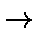

MOPAC has the capability to model the effects of changing an internal
coordinate. In the data-set, the relevant internal coordinate is flagged with a
`-1' rather than a '1' or '0'. Two options then exist to allow the values of
the changing coordinate to be defined.
First, the various values of the coordinate can be supplied after the geometry
and any symmetry data have been entered. An example for the SN2 reaction
Cl- + CH3F

CH3Cl + F- is given in Figure 1.
Figure 1:
Example of an SN2 reaction path calculation
A useful
alternative
to using
atom
numbers
when
defining
the
connectivity is
to use
atom
labels.
Second, if the step-size is a constant, then the step-size and number of steps
can be defined on the keyword line. An example of such a "reaction" would be
the rotation of a methyl group in, e.g., ethane, Figure 2. Here,
symmetry is used to maintain D3 symmetry as the rotation takes place. Note
that SYMMETRY can be used to relate coordinates to the reaction
coordinate. The path calculations work by optimizing the geometry while the
reaction coordinate is fixed at the starting value. Once the geometry is
optimized, the reaction coordinate is changed, and the geometry re-optimized.
This is done for all points on the reaction path.
Figure 2:
Example of a rotation barrier calculation
Reaction paths can be used for calculating mechanical properties. For example,
to calculate Hook's force constant for stretching polyethylene, the translation
vector could be steadily increased, Figure 3.
Figure 3:
Data set to stretch a polymer
step=0.05 points=20
Trans-polyparaphenylene benzobisthiazole
Stretching the polymer
C 0.0 0 0 0 0 0 0 0 0
N 1.3 1 0 0 0 0 1 0 0
S 1.7 1 115 1 0 0 1 2 0
C 1.6 1 92 1 0 1 3 1 2
C 1.4 1 109 1 -0 1 2 1 3
C 1.4 1 124 1 -180 1 5 2 1
C 1.4 1 116 1 180 1 6 5 2
C 1.4 1 121 1 0 1 7 6 5
C 1.4 1 129 1 180 1 4 3 1
S 1.6 1 129 1 180 1 7 6 5
C 1.7 1 92 1 180 1 10 7 6
N 1.4 1 113 1 -180 1 8 7 6
C 1.4 1 121 1 -180 1 11 10 7
C 1.4 1 120 1 -90 1 13 11 10
C 1.4 1 120 1 180 1 14 13 11
C 1.4 1 120 1 0 1 15 14 13
C 1.4 1 118 1 -0 1 16 15 14
C 1.4 1 120 1 0 1 17 16 15
H 1.0 1 121 1 -0 1 6 5 2
H 1.0 1 121 1 0 1 9 4 3
H 1.0 1 120 1 -0 1 14 13 11
H 1.0 1 119 1 -180 1 15 14 13
H 1.0 1 120 1 -180 1 17 16 15
H 1.0 1 119 1 180 1 18 17 16
xx 1.4 1 120 1 180 1 16 15 14
Tv 12.6 -1 0 0 0 0 1 25 24